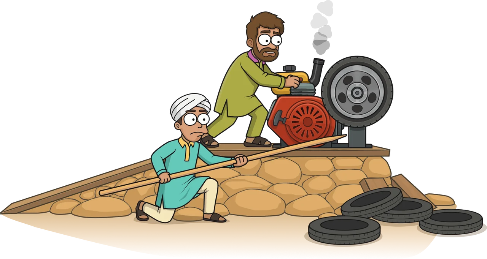

क्रैश गेम कैसे खेलें और Wheel Out कैसे काम करता है
Wheel Out, InOut Games का एक क्रैश गेम है जिसमें एक टायर रेगिस्तान में दौड़ता है। 97% RTP, हाई वोलैटिलिटी और अधिकतम 10,000x।
🔞 18+ · असली पैसे का गेम
क्रैश गेम एक तेज़ इंस्टेंट-विन गेम होता है जिसमें एक मल्टीप्लायर बढ़ता जाता है और आपको क्रैश होने से पहले कैश-आउट करना होता है। Wheel Out, InOut Games का एक क्रैश गेम है जिसमें एक टायर रेगिस्तान में दौड़ता है। यह पेज बताता है कि क्रैश गेम कैसे खेलें और Wheel Out कैसे काम करता है।
इस पेज के बारे में
लेखक: Ryan Murton, Growth & Product, ऑनलाइन कैसीनो और क्रैश गेम कवर करते हुए 7 साल। सटीकता के लिए को समीक्षित। हमारी About और Editorial policy देखें।
क्रैश गेम क्या है?
क्रैश गेम में आप राउंड शुरू होने से पहले दाँव लगाते हैं। फिर स्क्रीन पर मल्टीप्लायर बढ़ता जाता है और किसी भी पल क्रैश हो सकता है। जितनी देर आप रुकते हैं, इनाम उतना बड़ा, पर अगर कैश-आउट से पहले क्रैश हो गया, तो दाँव चला जाता है। Wheel Out इसी श्रेणी का गेम है।
Wheel Out गेमप्ले
Wheel Out कैसे खेलें
1) राउंड से पहले अपना दाँव तय करें। 2) टायर छूटता है और रेगिस्तान में दौड़ता है, मल्टीप्लायर बढ़ता है। 3) किसी भी समय कैश-आउट दबाएँ ताकि आपका दाँव मौजूदा मल्टीप्लायर से गुणा होकर लॉक हो जाए। 4) अगर कैश-आउट से पहले टायर क्रैश हो गया, तो वह दाँव हार जाते हैं। नतीजा एक सर्टिफाइड RNG तय करता है, कोई इसे पहले से नहीं जान सकता।
दाँव आमतौर पर करीब $0.12 से $200 प्रति राउंड तक होता है (लगभग ₹10 से ₹16,600), पर सटीक न्यूनतम और अधिकतम सीमा आपका ऑपरेटर तय करता है और हर कैसीनो में अलग हो सकती है। पहला राउंड खेलने से पहले गेम पैनल में दिखाई गई बेट लिमिट ज़रूर देख लें।

कैश-आउट का तरीका
Wheel Out RTP, वोलैटिलिटी और अधिकतम जीत
Wheel Out का प्रकाशित RTP 97% है, वोलैटिलिटी हाई है, और अधिकतम जीत 10,000x तक (बताई गई दरों पर $20,000 तक) है। RTP एक लंबी-अवधि का औसत है, किसी एक सेशन की गारंटी नहीं, हाई वोलैटिलिटी का मतलब बड़े पर कम बार आने वाले इनाम। इसलिए बजट तय करके खेलें।
मुख्य आँकड़े
Wheel Out डेमो और फ्री प्ले
कई ऑपरेटर Wheel Out का फ्री डेमो देते हैं जो प्ले-मनी क्रेडिट पर चलता है, ताकि असली पैसे लगाने से पहले आप टाइमिंग समझ सकें। डेमो असली गेम जैसा ही चलता है पर उसकी कोई नकद कीमत नहीं होती।
लाइव डेमो
ऊपर दिया गया डेमो InOut Games का आधिकारिक Wheel Out डेमो है। यह सिर्फ़ प्ले-मनी क्रेडिट पर चलता है, कोई डिपॉज़िट या डाउनलोड ज़रूरी नहीं।
Wheel Out कहाँ खेलें
Wheel Out इंस्टेंट-प्ले है, यह मोबाइल या डेस्कटॉप ब्राउज़र में चलता है, कोई ऐप या APK डाउनलोड करने की ज़रूरत नहीं। इसे InOut Games लाइसेंस्ड ऑपरेटरों को देती है, इसलिए उपलब्धता आपके देश/राज्य और कैसीनो पर निर्भर करती है। भारत में असली-पैसे के गेमिंग के नियम राज्य के अनुसार अलग हैं, पहले अपने स्थानीय नियम जाँचें।
इस पेज के लिंक से साइन-अप करने पर हमें कमीशन मिल सकता है, आप पर कोई अतिरिक्त शुल्क नहीं। इससे हमारी रैंकिंग या राय पर असर नहीं पड़ता।
ऑपरेटर
वेलकम बोनस
Wheel Out (हाँ/नहीं)
पेआउट स्पीड
न्यूनतम डिपॉज़िट
लाइसेंस / क्षेत्र
आख़िरी जाँच
खेलें
RodeoSlots
100% €500 तक + 150 FS
हाँ · InOut Games
48 घंटे तक
€20
Curaçao / ग्लोबल
LuckyStar
$1,000 तक + 150 FS
हाँ · InOut Games
2–24 घंटे
$20
Curaçao / ग्लोबल
RollXO
125% €1,000 तक + 200 FS
हाँ · InOut Games
तुरंत
$10
Curaçao / ग्लोबल
ये सभी ऑपरेटर Curaçao लाइसेंस पर अंतरराष्ट्रीय स्तर पर काम करते हैं, इनका भारतीय लाइसेंस नहीं है। भारत में असली-पैसे के ऑनलाइन गेमिंग के नियम राज्य के अनुसार अलग हैं और कई राज्यों में यह प्रतिबंधित है, इसलिए खेलने से पहले अपने राज्य के मौजूदा नियम ज़रूर जाँच लें।
क्या Wheel Out सुरक्षित है? Predictor का सच
Wheel Out एक असली गेम है और सर्टिफाइड RNG इस्तेमाल करता है। 'क्रैश गेम ट्रिक्स', 'predictor', 'signal' या 'hack' जैसे टूल काम नहीं करते, हर राउंड का नतीजा RNG तय करता है जिसे पहले से पढ़ा नहीं जा सकता। ऐसे टूल बेकार या धोखा होते हैं। सुरक्षित रहने के लिए सिर्फ़ लाइसेंस्ड ऑपरेटर पर खेलें और किसी 'गारंटीड जीत' के दावे पर भरोसा न करें।
अक्सर पूछे जाने वाले सवाल
क्रैश गेम कैसे खेलें?
राउंड से पहले दाँव लगाएँ, फिर मल्टीप्लायर बढ़ते हुए देखें और क्रैश होने से पहले कैश-आउट कर लें। जितनी देर रुकेंगे इनाम उतना बड़ा, पर जोखिम भी उतना ज़्यादा। Wheel Out में टायर के क्रैश होने से पहले कैश-आउट करना ही मुख्य फैसला है।
Wheel Out का RTP कितना है?
Wheel Out का प्रकाशित RTP 97% है। यह कई राउंड का लंबी-अवधि औसत है, किसी एक सेशन की गारंटी नहीं। हाई वोलैटिलिटी की वजह से असली नतीजे इससे काफी ऊपर या नीचे जा सकते हैं।
Wheel Out में अधिकतम कितना जीत सकते हैं?
प्रकाशित अधिकतम जीत 10,000x तक है (बताई गई दरों पर $20,000 तक)। हाई वोलैटिलिटी के कारण सबसे बड़ा मल्टीप्लायर बहुत कम आता है, इसलिए इसे एक सीमा समझें, उम्मीद नहीं।
क्या Wheel Out का डेमो फ्री है?
हाँ, कई ऑपरेटर फ्री प्ले-मनी डेमो देते हैं ताकि असली पैसे लगाने से पहले आप टाइमिंग सीख सकें। डेमो बिल्कुल असली गेम जैसा चलता है पर उसकी कोई नकद कीमत नहीं होती।
क्या Wheel Out खेलने के लिए ऐप डाउनलोड करना ज़रूरी है?
नहीं। Wheel Out इंस्टेंट-प्ले है और किसी भी आधुनिक मोबाइल या डेस्कटॉप ब्राउज़र में चलता है, इसलिए कोई ऐप, APK या डाउनलोड ज़रूरी नहीं। किसी भी थर्ड-पार्टी 'Wheel Out ऐप' से सावधान रहें।
क्या कोई Wheel Out predictor या ट्रिक काम करती है?
नहीं। हर राउंड का क्रैश पॉइंट सर्टिफाइड RNG तय करता है जिसे पहले से जाना या प्रभावित नहीं किया जा सकता। कोई भी predictor, signal या ट्रिक ऐसा दावा करे तो वह भ्रामक है, बचें।
और पढ़ें
पूरी जानकारी के लिए हमारी अंग्रेज़ी Wheel Out हब और Wheel Out रिव्यू पढ़ें, जहाँ RTP, वोलैटिलिटी और वर्डिक्ट विस्तार से हैं।
Wheel Out डेमो आज़माएँ
टाइमिंग का अंदाज़ा लगाना है? पहले फ्री Wheel Out डेमो आज़माएँ, फिर तय करें कि लाइसेंस्ड ऑपरेटर पर असली पैसे से खेलना है या नहीं।
18+ (जहाँ कानून कहे वहाँ 21+)। Wheel Out असली पैसे का इंस्टेंट-विन गेम है और इसमें आर्थिक जोखिम है। केवल उतना ही पैसा लगाएँ जितना आप खोने का जोखिम उठा सकते हैं, नुकसान की भरपाई के पीछे न भागें, और किसी भी जीत को आमदनी नहीं, बोनस समझें। अगर खेल तनाव देने लगे तो मदद उपलब्ध है: BeGambleAware (begambleaware.org) या GamCare (gamcare.org.uk)। उपलब्धता और कानूनी उम्र हर देश/राज्य में अलग होती है, खेलने से पहले अपने स्थानीय नियम जाँच लें।
भारत में मदद कहाँ मिलेगी: भारत में जुए के लिए कोई अलग राष्ट्रीय हेल्पलाइन नहीं है, पर मानसिक स्वास्थ्य और लत से जुड़ी मुफ़्त सरकारी सेवाएँ उपलब्ध हैं। Tele-MANAS (स्वास्थ्य एवं परिवार कल्याण मंत्रालय) की 24×7 मुफ़्त हेल्पलाइन 14416 या 1-800-891-4416 पर 20 से ज़्यादा भारतीय भाषाओं में सलाहकार उपलब्ध हैं। सामाजिक न्याय एवं अधिकारिता मंत्रालय की KIRAN हेल्पलाइन 1800-599-0019 भी 24×7 मुफ़्त चलती है। जुए की लत के इलाज के लिए बेंगलुरु स्थित NIMHANS का Centre for Addiction Medicine (SHUT क्लिनिक) सबसे भरोसेमंद कम-खर्च वाला सरकारी विकल्प माना जाता है। Gamblers Anonymous की ऑनलाइन मीटिंग भी मुफ़्त हैं।
एफिलिएट डिस्क्लोज़र: इस पेज के कुछ लिंक एफिलिएट लिंक हैं। इनके ज़रिए साइन-अप या डिपॉज़िट करने पर हमें कमीशन मिल सकता है, आप पर कोई अतिरिक्त शुल्क नहीं पड़ता। इससे हमारे RTP आँकड़े या राय पर कोई असर नहीं पड़ता।
लेखक: Ryan Murton, ऑनलाइन कैसीनो और क्रैश गेम कवर करते हुए 7 साल। अंतिम अपडेट: । हमारा संपादकीय तरीका About पेज पर देखें।